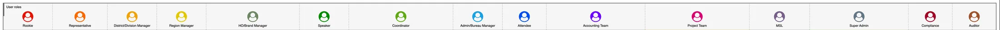
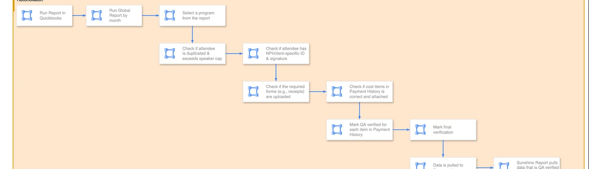
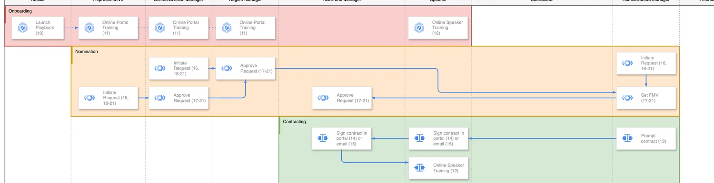
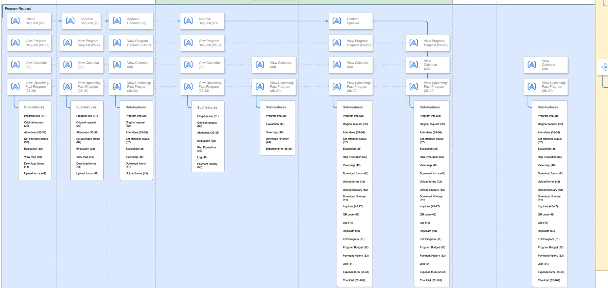
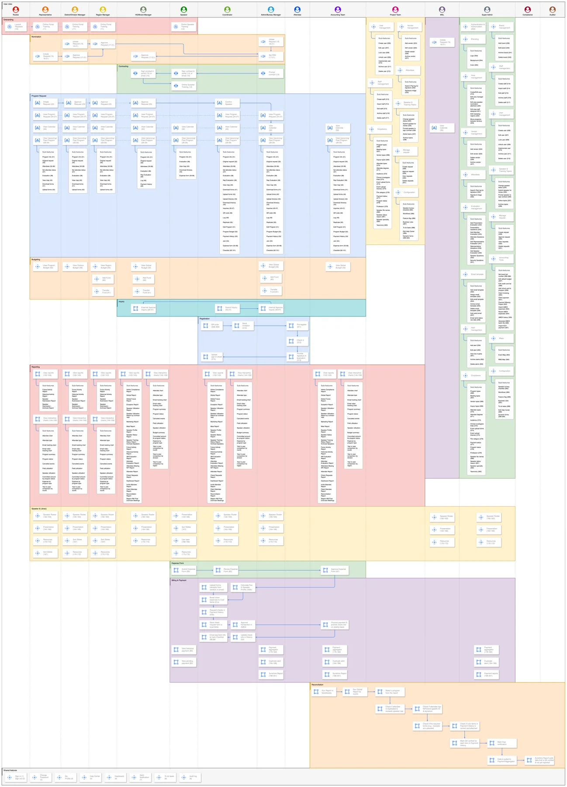

The 15-second version
Seventeen roles touch a single speaker program, each with its own approval gate — mapped end to end that came to 496 user stories across 13 workflow areas counted, all competing for one MVP.
Cut to the program-request spine — the one flow every role touches — and ship the four roles that own it end to end. Everything that only reads the record was deferred.
Reconciliation that ran daily across three systems — the bureau platform, the corporate card, the accounting ledger — collapses onto one program record that all 17 roles read and write. target
Discovery
What a speaker program actually is
It looks like one event and works like a supply chain. A rep nominates a doctor, a manager approves, compliance checks the engagement, a coordinator books travel, accounting settles the fee against a budget set months earlier. Every handoff used a different tool and a different idea of what "done" meant.
Nobody owned the whole thing, so nobody could say where a program was without asking four people. That is the problem underneath every number on this page.

User insight
I mapped 17 roles and wrote three personas: a sales rep, an event coordinator, a speaker counted. Each role got an as-is and a to-be flow, and that's where the finding showed up. The same program means something different to each of them. To a rep it's a request waiting on approval. To compliance it's an audit record. To accounting it's a set of charges against a budget line.
Data insight
The clearest evidence came from accounting, not the field. Reconciliation ran daily, by hand, matching card expense reports against cost items in the platform on a report of 77 to 102 columns depending on the tenant client spec. Something that wide, run that often, is where the cost sits.
Still missing the field-side baseline: programs per year, average approval cycle, exceptions raised per quarter. Any one of them turns the strongest claim on this page from a target into a measurement.
Business insight
Payments to doctors have to be reported to the federal government, so an approval chain nobody can trace is a legal risk, not just a hassle. The reconciliation flow ends in a Sunshine Report on the map. That's why every role doc carries an access matrix and an audit-trail requirement.

The four questions, answered in writing
- Who are the users, and what problem do they have? Seventeen roles across field, scientific, operational and governance teams. None can finish a program without the others, and none shared a system of record.
- Why now? The chain above ends in a federal filing and runs by hand every day. That kind of risk builds up daily; it doesn't wait for a convenient release. Confirm the immediate trigger on top of this — contract renewal, a failed audit, a legacy portal being sunset, a new tenant to onboard? Regulatory pressure is the standing reason; an interviewer will still ask what made it urgent that quarter.
- What would tell us it worked? Unfilled — the target you set at the start, before you knew the answer. This is what makes §7 credible.
- Is it feasible? Yes, and we showed it instead of arguing it: a working prototype of the riskiest screens, deployed for review.
The decision: what not to build first
A 496-story backlog across 17 roles isn't a ranking problem. No ordering of 496 items gives you a release that hangs together. Slice it by role and you ship a rep experience that dead-ends at an approval nobody can give. Slice it by feature and you ship a budget module with no program to attach it to.
Options
Role-complete. Finish the rep experience, then the next role. Quick to demo, but every flow stops at a role that doesn't exist yet.
Feature-complete. Build each of the 13 workflow areas across all roles. Clean, but nothing works until most of it is done.
Spine-first. Take the one flow every role touches — request through approval — and ship it end to end for the roles that own it.
Criteria
Can a real program run in production on day one? Does each release leave a working system or a half-built approval chain? Which order tackles the hardest logic earliest? And can a new tenant start without waiting for all 17 roles?
What I chose
C, spine-first. We tiered the backlog Must-have against Post-MVP along the request spine, and shipped the four roles that own a program from start to approval. Budget came with it rather than after. Top-down allocation and bottom-up charges carry the weight of the whole record, and putting them off would have meant rebuilding around them later.
What I killed
Every role that only reads the record: attendee self-service, auditor tooling, the rookie track. The thinnest slices, and the ones a working program can live without. The cost was real — attendees stayed on paper sign-in sheets for a release, and the auditor kept exporting instead of querying.


Confirm this narrative before it ships. The options, criteria and kill list above are reconstructed from the artifacts — the Must-have/Post-MVP tiering, the 13-swimlane map, and the backlog's own shape (attendee 5 stories, rookie 1, against 45 for a region manager). If the real call was made differently, this is the section to correct first: it is the one an interviewer will probe hardest.
Solution design
All of the above came off one artifact: a map of 17 roles against 13 workflow areas, every cell carrying its ticket reference. Having the whole product on one surface meant scoping arguments got settled by pointing at it.

The hard part
Budget runs in two directions at once: top-down from a signed contract through area allocations, and bottom-up from per-event charges. I specced the state changes in detail — what happens to committed budget versus money actually spent when a program is approved, cancelled or closed — because that's where reconciliation disputes start.
Specced, then proven
496 user stories written as As a… I want… so that… with acceptance criteria counted, tiered Must-have against Post-MVP, each traced to an epic. Nineteen items still sit open. It's a working backlog, not a finished document.
A prototype, not a deck
We built the riskiest screens instead of drawing them: a React prototype of about 21,350 lines over ten weeks counted, covering program detail, budget and transfer funds, role dashboards and a form builder. Each screen exported on its own, so a stakeholder could open one page instead of clicking through a demo.
Building it turned up two things the spec had missed. Tracing a program title back to its request form showed coordinators quietly changing event format and setting type between request and approval — a data problem no amount of writing would have caught. And an audit of design tokens found 17 of 18 status tokens had drifted out of sync with the Figma library.
Name the validation method. Was the prototype tested with real reps and coordinators (moderated testing), or reviewed by the client team (expert inspection)? One sentence, and it separates this from shipping on instinct.
Delivery
One scope change is worth recording. Transfer funds started as a panel inside the budget screen and ended up a full page. Moving money between allocations needs a two-step confirm and a clear before and after, and a panel couldn't show that without hiding the number the user most needed to check.
Worth saying plainly, because it shaped everything else: the design deliverable was a coded prototype in the product's own stack, not a Figma file. Design tokens and a git branch were the source of truth, and engineering pulled from there and owned auth. That's why the token drift above got caught at all — it showed up as a diff rather than as a surprise in QA.
Add the constraints that actually bit — a dependency that slipped, a technical limit that forced a rethink, a scope cut agreed with engineering. Two or three sentences. This is where technical partnership becomes visible, and most candidates have nothing to say here.
Learning and follow-up
Specced and handed off. Not measured by me. I moved on before a measurement cycle closed, so there's no outcome number here I can stand behind. I'd rather say that than imply a win.
The three measures on the right are what I'd have tracked. The first is the one I'd have set a target on, because that's what the spine-first call was really betting on — if approval cycle time didn't move, the whole argument for shipping the request spine before anything else was wrong.
If you can source any of these from the client — even directionally, even under NDA as a ratio — this section becomes the strongest in the case study rather than the most honest one. The framework allows "cut approval time roughly 60% (client-reported)".
What I'd do differently
I wrote 496 stories before I had a single baseline number. The spec is thorough — as-is and to-be flows for all 17 roles — but thorough isn't the same as proven, and I still can't tell you what the old process cost. A week spent timing real program requests at the start would have given the project a number to be judged against, and would have turned the spine-first argument from a diagram into a measurement.
I also let the design system drift far enough to need an audit. Catching 17 of 18 tokens out of sync was fine. Needing to catch it was the miss. Calling code the source of truth on day one would have cost nothing.
Optional third: something specific and unflattering about a call you got wrong on this project. Self-awareness is a screened-for trait and this is the cheapest place to show it.